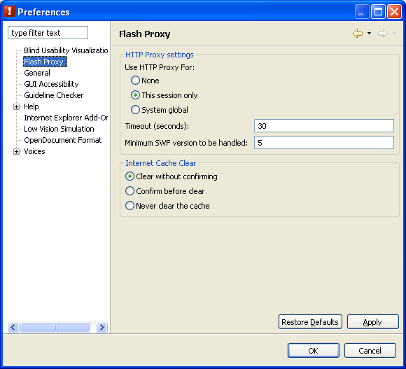
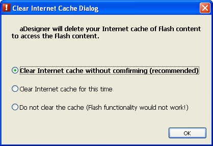

Flash Accessibility perspective configurations
Flash Proxy preferences
Configure behavior of the internal proxy for the Flash Outline view (Figure 1).

Figure 1. Flash Proxy preferences
HTTP Proxy settings
- Use HTTP Proxy For:
- This option configures which HTTP connections the proxy mediates.
- None: The proxy does not mediate any HTTP connection. The Flash Outline view is disabled
if this option is set.
- This session only (default): The proxy mediates connections related to the application.
- System global: The proxy mediates all HTTP connections, even for websites viewed with a standard browser.
- Timeout (seconds):
- Specify a non-negative integer. This controls the connection timeout when the proxy is used.
The default is 30 seconds.
- Minimum SWF version to be handled:
- Specify a non-negative integer. The proxy does not process Flash content if it is older than a version specified here.
Default is 5. Note: Since Flash content older than the version 5 has limited ActionScript functionality,
ACTF cannot obtain its internal structure.
Internet Cache Clear
The Internet cache must be cleared before viewing webpages for the Flash Outline view to work correctly.
However, clearing the cache affects browser performance.
This setting controls what ACTF should do to the cache when the tool is started.
- Clear without confirming: ACTF clears the cache without any confirmation dialog.
- Confirm before clear: ACTF shows a confirmation dialog to ask whether or not to clear the cache (Figure 2).
- Never clear the cache: ACTF does not clear cache at start-up.
The Internet cache must be cleared manually to use the Flash Outline view in one of the following ways.
- Select the File > Clear internet cache menu.
- Clear from the Internet Option menu. Here are the manual steps for Internet Explorer 6:
- Select the Tools > Internet Options menu in the Internet Explorer, or select Internet Options
from the Control Panel.
- Select the General tab in the dialog box and select Delete Files under
Temporary Internet Files.
- When asked for confirmation select OK to clear the cache.
- Select OK to close the Internet Options dialog.

Figure 2. Confirmation dialog for clearing the cache
Go to Index